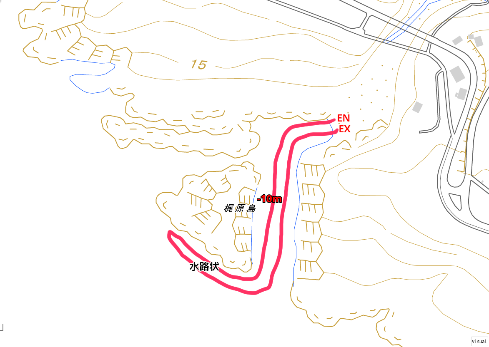

ぼくが NAUI のオープンウォーター I を取ったのが、当時の職場だった大阪市淀川区の小さなソフトウェアハウスから歩いて 5 分と少しの場所にある小さなショップさんだった。本来は水中作業を顧客から請け負う BtoB 専門の社員数 4 名程度の小さな企業さんだった。
ぼくの認定に関わっていただけたのは、NAUI インストラクターで社長さんの岡村さん (仮名) と坂下さん (仮名)。後にその会社で一番若かった齋原さん (仮名) も NAUI インストラクターになられ、それまで知らなかったダイビングの楽しみをいろいろ教えていただくことになる。
岡村さんと坂下さんにそれぞれ違う日に南紀白浜の円月島でコンファインドウォーターとオープンウォーターの実習をそれぞれ受けて、なんとか終了したのが 1987 年 7 月 26 日 (日)。
もちろんその時はそのことを知る由もないのだけれども、その年の秋にぼくが知らないところで、もちろん当時のぼくにはぼくのダイバーとしての未来がどうなるのかもわかってはいかなかったけれども、将来ぼくの師匠となる人が NAUI のインストラクターに認定されて、しばらくして新大阪近くのマンションの一室で開業することになる。なるんだけれども師匠になる人がお店を開業したことを知るのはもう少し後になる。これ以降、この人のことを師匠と書くことにする。
またオープンウォーター I の講習の時から、ぼくがそのお店を離れるまで、ずっとバディになる児嶋さん (仮名) とも出会う。岡村さんのお店に仕事を終えて遊びに行くと、なぜかいつもテニスウェアを来て来店されていた。
ぼくと児嶋さんのオープンウォーター I の講習を終えてから、しばらくしてから岡村さんと坂下さんの双方から、ぼくたちの認定のことで、岡村さんと坂下さんの間でひと悶着あったことを聞かされた。
講習を終えて多少課題は残しつつも、たとえ基準をギリギリであっても満たしていれば、ダイバーとして認定されることは当時から厳しいという評判であった NAUI であってもやはり多い。
その頃はダイバーというものは認定してくれたショップのツアーにそのまま参加することが普通で、ツアーに参加しながら講習を担当してくれたインストラクターに、ダイビングのことや海のことをさらにいろいろ学び続けるのがスタンダードだった。
当時は安いお店を探して右往左往するという行動パターンはダイバーにはなかった。そもそも現在のようにネットなんてなかったし、得られる情報が少なかったのも要因ではあるかと思う。でも基本的にダイバーはこの人ならと思えるインストラクターについていくのが普通だった。
そんな時代だったので、カードが即時に発行されるかどうかは大した問題ではなかった。とはいえ店に遊びに行っても (なにせ職場から徒歩 5 分なので) 認定の話が一向に出ない。出ないので、試しにテンポラリーカードってのがあるって聞いてますが、どうなってます？って訊ねてみた。すると目の前で坂下さんがテンポラリーカードにサインを入れて即時認定証が発行された。
後から聞いた話では、このことで岡村さんと坂下さんの間が険悪になってしまったらしい。岡村さんとしては、ぼくや児嶋さんにもう少し覚えてほしいことがあったらしく、認定は出さずにもう少しツアーに参加してもらって、フォローアップしたいってことだったとのこと。これは岡村さんから聞いた話。
一方、坂下さんとしては基準を満たしているのだし、ぼくや児嶋さんが危険な行動を取るようには思えなかったし、そのままショップのツアーに参加しながら学び続ける意志を二人共持っていたので、そのまま認定証を発行してツアーに参加し続けてもらえればよいって考えだったとのこと。
今から考えればぼくも児嶋さんもツアーに参加しながらお二人からいろいろ教わるってことに変わりはなく、ショップとぼくたちの間で行われることも、ショップとぼくたちの行動も関係も、一切何も変わらんし喧嘩する必要ないやん、と思えるのだけど、お二人の間では当時かなり揉めたらしい。それだけが原因だとはさすがに思わないけれど坂下さんはしばらく後に仲間と起業するということで退職されてしまう。
児嶋さんはそのまま岡村さんのショップに通い続けることになるけれど、ぼくは坂下さんからいろいろ教わり続けていたこともあるし、先輩ダイバーとして慕ってもいたので坂下さんの転職先にも出入りするようになる。かといって岡村さんにもお世話になっていることにもまったく変わりはないので 2 軒のお店をそれぞれうろうろすることに。
当時このぼくの行動が良いことなのかどうなのか判断ができなかったので、後に岡村さんのお店でインストラクターになる齋原さんに相談してみたことがある。齋原さんは開口一番、いや、ダイバーがインストラクターについていくのは当たり前なことなので、坂下さんについていくのはいいんじゃないですか？とのことだった。
でもぼくは完全に岡村さんの店を離れるつもりもなかったし、バディとなった児嶋さんとさよならするつもりもなったくなかったので、岡村さんのお店と坂下さんが転職した先のお店をそのままウロウロすることになる。
とはいえ、岡村さんにはずっとアドバンスの開催をお願いし続けていたけれども、まったくその気配がないので、もう少しダイバーとして成長したいと思っていたぼくは、他のショップも見て回ることになる。
そんななか、さっき触れたけれども、師匠が新大阪の駅の近くのマンションの一室でショップを開いたことを耳にする。まだ完全に通うお店を変えるところまで考えてはいなかったけれど、師匠のお店にも遊びに行くようになる。
なので当時は 3 軒のお店をウロウロと回遊するへんなやつになっていた。師匠からすると店に遊びに来はするものの何かを買うわけでもなく、ツアーに参加するわけでもなく、講習を受けるわけでもない、変なやつだときっと思われてたと思う。
当時ぼくはダイビング仲間を増やしたかったこともあって、同じ会社の人 3 人を坂下さんのお店に連れてって、白浜の円月島で体験ダイビングツアーをやってもらったりもしたけれど、坂下さん自身が作業の仕事に忙殺されるようになり、レジャーの方にまで手が回らなくなったこともあって、坂下さんとはそのまま疎遠になってしまうことになった。
そのうち齋原さんが NAUI インストラクターになって岡村さんのお店がおもしろくなってきた。おもしろくなってきたなという矢先、やっぱり齋原さんが開業したいということで退職されていった。齋原さんが退職された途端に岡村さんのショップは開業休業状態に突入する。岡村さんが工事やスポーツクラブの講習で手一杯で、お店を維持する時間を取れなくなってしまったことによる。
当時関西国際空港の工事が本格的に進められていて、作業ダイバーの人たちは忙しくしていた。レクリエーショナル・ダイビングの世界から、インストラクターだった人たちがどんどんと離れていっている時期に入っていた。
坂下さんは作業の世界に戻られてしまったし、岡村さんはお店を開いている時間がない、齋原さんはどこでなにをやっているのかわからない、という状態になってしまって、ぼくは行き場がなくなってしまった。
まさかソロで潜るわけにもいかないし、本当に一緒に潜ってくれる人がいなくなってしまった。岡村さんのお店がずっとシャッターが下りている状態になってしまっているので児嶋さんとも連絡がとれない。岡村さん人脈の中では本当に一人ぼっちになってしまった。
当時は現地サービスを個人で利用するという発想はダイバーにはなかった。僅かな人にはあったのかもしれないが、講習を受けたショップとガッツリつながることが一般のダイバーにとっては殆どで、講習を受けたショップが休眠状態になったり、休業、廃業してしまうと、その時のぼくのように即時にダイビング難民化する運命にあった。
繰り返すけれども当時はネットはなかったし、頼りになるのは知人の口コミや雑誌の記事や広告だけだった。
当時アドバンスを一向に開いてもらえないことから心は岡村さんからは離れ始めていたこともあって、それまで客とは言えなかったし、どんな講習をしていたのかは学科だけしか見ていなかったけれども、自然とぼくの心は傍で見ていた師匠の方を向くようになる。ぼく自身を託すのはこの人しかいないなって。
それでそれ以降、人に体験ダイビングや講習を勧めるときは師匠を勧めるようになった。今の妻が NAUI オープンウォーター I の講習を受けるときも、ぼくが師匠を勧めて、彼女の講習にはぼくもくっついて行っていた。
彼女が串本に向かう車の道中で師匠とぼくのことを話している時に、師匠がぼくのことを、いや、こいつはうちで何か買ったこともないし、ツアーにも参加したことがない、だから客じゃない、ってはっきりと言ったのを今でも覚えていて、申し訳なかったなと今でも笑みがこぼれでてしまう。師匠あの頃は本当にすいませんでした。
結局ぼくは出入りする店を岡村さんのところから師匠の店へと完全に変えてしまうことになった。岡村さんの店はいついってもシャッターが下りているし潜りに行くこともできない。通い続ける理由がなくなってしまったので、この人は信頼できる、しかもすごく信頼できる人だわと思った師匠の店に移るのはぼくとしては自然な行動だった。
ぼくが体験ダイバーと彼女のオープンウォーター I の講習の付き添いを除いて師匠の店のツアーに初めて参加したのは 1988 年 5 月 4 日 (水) の串本ツアーになる。
またこの頃から客先などで他のダイバーと知り合うようになり、白崎、白浜、越前などでバディ・ダイビングを始めるようになる。このバディ・ダイビングとショップ・ツアーの二足のわらじは、ぼくがインストラクターというか開業を目指し始める 1993 年頃まで続くことになる。
そんななか 1990 年に派遣先で若手 SE として勤務する、ぼくが生涯のバディと思う小野寺くん (仮名) と出会うことになる。生涯のバディと書くと大げさだけど、ダイビングに一緒に出かける仲間のなかで、彼が生涯でもっとも大事な友人だということになる。
小野寺くんと出会って、利用する拠点を師匠の店に移すことで、ぼくのダイビング・ライフは小野寺くんとのバディ・ダイビング、小野寺くんの師匠になる白浜で CMAS コースディレクターをやっている高嶋さん (仮名) を頼っての現地サービス利用、そしてぼくの師匠のショップ利用の 3 つの柱態勢になる。
そしてさらっとバディ・ダイビングと書いてきたけれども、今のダイバーから見ると、バディ・ダイビングってなにかしら特別で難しいもの、という感覚があることは知っている。
ただぼくらの感覚で言うと、バディ・ダイビングというのは特別なものでもなんでもなくて、そもそもバディ同士でダイビングをするための講習であったし (これは今でもそう)、ショップやインストラクターからいずれ卒業してバディと一緒に出かけて潜れるようになるためのショップツアーだった。
そういう意味でショップのツアーに参加することも継続教育だった。ツアーで実際に潜りながら、水中でインストラクターが止まれの合図を送ったとき、それは水中の状態がそこから変わるからまずは止まって海の状況を観察しなければならないことを示していたし、そんなことを数知れずぼくたちはツアーで教わってもいた。

たとえばこの地図は 1987 年 9 月 27 日 (日) に坂下さんの引率、指導で和歌山県白浜町の梶原島に潜ったときのログに記載した地図だけれども、坂下さんは紀伊半島本体と梶原島の間の水路を出かかったあたりで、ぼくと児嶋さんをハンドサインでストップさせた。
そこから先はむき出しの紀伊水道になる。紀伊水道なのだから波もうねりも流れもあるのが普通だ。だから、坂下さんはハンドサインでぼくと児嶋さんをストップさせた。そして外洋の状態を目で見て確認しろ、とハンドサインを送る。
そして三人で波もうねりも、流れも問題ないことを確認して、梶原島東の水路を抜ける。
そのように、ぼくたちはツアー中に、海や陸上の地形から、海をどう読んで、何を考えて、観察して、どう判断するのかを、坂下さんを始めいろんなインストラクターから学んでいくことになる。
こんな風にインストラクターの仕事はダイビングのスキルを教えることだけじゃなかったし、オープンなどのコースが終わってからが本番だった。海のことを知るには、より海のことをより深く知っている先輩ダイバーであるインストラクターから学ぶのは当たり前のことだった。
そうしていずれはぼくたちはインストラクターやショップという母港から、バディ・ダイビングを普通に行うダイバーとして出港していく、誰もがそんな船のような存在だった。そして必要なとき助けを必要としたときには港に戻る船のようにインストラクターやショップの元に帰港して、再び教えを請う、そんなことが普通の世代だった。
これがダイバーとしてのスタンダードだった。
なのでインストラクターはすごく尊敬される存在だった。今のインストラクターもそんな存在であることに実は変わりはないのだけれど、環境のほうが変わってしまった。
現在ではインストラクターは安全に潜る能力や意識がない人たちのお世話係になってしまっていて、本来の仕事をさせてもらえていない。世の中がインストラクターに求めているのは指導者であることではなく、単なるお世話係なので、インストラクターの持つ知恵や経験、指導力が発揮されてダイバーを育てるという本来の仕事が阻害されてしまっている。
これは誰が悪いって話になりやすいが、誰が悪いのでもなく安全の責任を過度にインストラクターに求める社会構造の変化や社会の共通認識が広まってしまい、大半のダイバーの意識もそのようなベクトルにシフトしてしまったことで、インストラクターの本来の職能を発揮する場面が、ほぼ消失してしまったということになる。
ある意味、現在の全てのダイバーの不幸はそこから始まっていると言える。誰も気づいていないけれど。
最近になって PADI や NAUI などの潜水指導団体が自立したダイバーになってバディ・ダイビングを勧めていくように舵を切ったけれども、あまり芳しい効果は今のところ出ていない。たぶん無理なんじゃないかと正直思う。だって少なくとも日本では環境がそうなっていないから。日本人という民族が変化しないと、これは変化しようがないと思う。